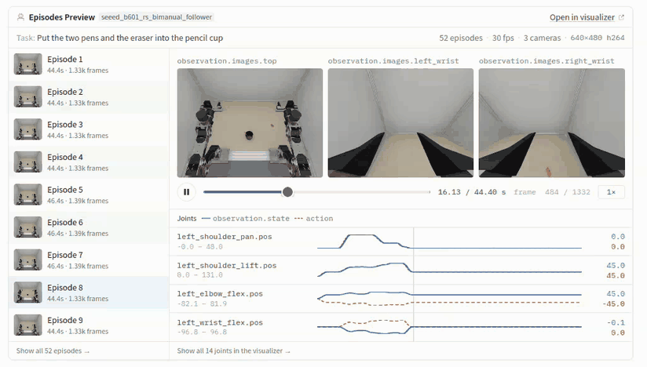
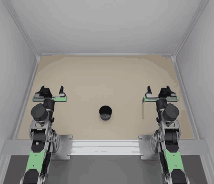
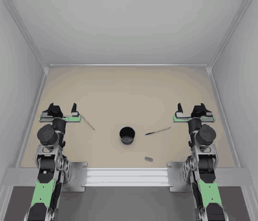
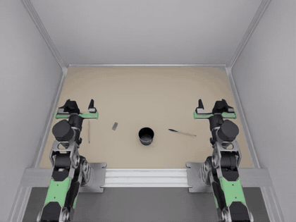

Bimanual reBot B601: from simulation on a Dell Pro Max to a served policy, with hardware in the loop on Jetson Thor
Two Seeed reBot arms put two pens and an eraser into a pencil cup. In six modules you set up the scene, record scripted demonstrations, train vision-language-action models on them, run a trained model back in the simulator through an inference server, and finally move that model onto a Jetson AGX Thor, the robot's own computer, while the simulator keeps running on the workstation.
Robot 2 × reBot B601, 6 joints + gripperControl 30 Hz, absolute joint targetsData 52 episodes · 70,884 framesWorkstation Dell Pro Max 16 Plus · RTX PRO 5000 24 GB
The stack spans three Python environments. Each one has a single job, so dependency conflicts stay contained. Isaac Sim pins its own Python, and the vla-edge server is deliberately light.
You will be able to
Say which environment runs which stage, and why they are kept apart.
Install the three repositories in the right places.
Run the unit tests without a GPU or simulator.
WorkstationDell Pro Max 16 PlusModel MB16250 · BIOS 3.1.1
CPU
Intel Core Ultra 9 285HX, 24 cores, up to 5.5 GHz
GPU
NVIDIA RTX PRO 5000 Blackwell Laptop, 24 GB
Memory
128 GB RAM
Storage
Samsung PM9E1 NVMe, 2 TB
SoftwareUbuntu 24.04.4 LTSLinux kernel 7.0.0-38
Driver
NVIDIA 595.99.02, CUDA 13.2
Simulator
Isaac Sim 6.0.1, isaaclab 6.1.17
Training
LeRobot 0.6.2, PyTorch 2.11 (CUDA 12.8)
Serving
vla-edge 0.1.0
Measured on this machineThroughput24 October 2026 runs
Collect
≈ 100 s per episode, CPU physics
Train
SmolVLA 0.7 s/step at batch 32, 10.6 GB
Infer
≈ 160 ms per 50-step chunk
Evaluate
≈ 4.6 min per 90 s episode
Hardware in the scene
Maker
Details
reBot B601 arm × 2
Seeed Studio
6-DOF arm with parallel gripper; follower arm of the reBot leader/follower teleoperation kit
Wrist camera × 2
Seeed Studio reBot kit
UVC32 camera on link6, 640×480, 4.2 mm lens
Workstation and top camera
YAMLab station
Table, YAM arm mounts and a calibrated top camera on a gate at 1.70 m
Environment
Python
Runs
~/miniconda3/envs/env_yamlab6
Isaac Lab 3 / Isaac Sim 6
The scene, the scripted expert, the sim client (sim_rollout)
rebot-sim-pipeline holds the scene and data generator. rebot-bimanual-vla holds the embodiment, the policy runtimes and the sim client. vla-edge is the serving stack. The single-arm rebot-arm-dli-isaacsim project supplies robot, camera and stationery assets.
cd ~/rebot-bimanual-vla && ~/vla-edge/.venv/bin/pytest -q
Check10 passed: registration of both policies, wire conversions, the replay server over HTTP.
Module 1
The bimanual scene
Verified
Two reBot B601 arms stand at YAMLab's YAM mounts and share one pencil cup. Each arm sorts the objects on its own side, one arm at a time, so the arms never meet over the cup.
You will be able to
Describe the scene layout, the three cameras and the objects.
top (fx ≈ 392 px), left_wrist, right_wrist under each link6; all 640×480 RGB
Objects
Each lies 0.18–0.35 m in front of its arm, ≥ 5 cm from the others; new layout per seed
Grasp assist
A closed gripper carries a 4 mm pen rigidly: attach at command ≤ 0.014 m and opening ≤ 0.028 m
Success
Held 0.35 s: every object within 3.8 cm of the cup centre, pens within ~57° of vertical, everything slower than 0.25 m/s, both grippers open and empty
Episode limit
90 s of sim time in evaluation mode (2,700 steps)
1
Watch one scripted dry run
shell
cd ~/rebot-sim-pipeline
rebot-bimanual-generate -n 1 --gui --no-recording
A window opens for each camera. The expert homes both arms to (0, −45, −45, 0, 0, 0)°, does the pens first, then the eraser, and holds 2 s at the end so the success check can settle.
Module 2
Data collection
52 episodes collected
A scripted expert solves the task with inverse kinematics. Only successful episodes are kept, and they are written as a LeRobot v3 dataset in the real reBot leader/follower conventions, so the same files could train a policy for the physical arms.
You will be able to
Collect N successful episodes on fresh layouts.
Read the dataset's features and conventions.
Check the data end to end with a replay before training.
Publish the dataset to the Hugging Face Hub.

The collected dataset on the Hugging Face viewer: 52 episodes at 30 fps, three 640×480 cameras, and each joint's measured state (blue) against the commanded action (orange dashes). The state and action lines differ in sign on some joints because they use the follower and leader conventions.
1
Collect
shell
cd ~/rebot-sim-pipeline
# 50 successes on layouts 100, 101, …
rebot-bimanual-generate -n 50 --seed 100
Each attempt samples a layout from --seed + attempt number. Reusing a seed repeats its layouts, so pick a new range for each batch. Failed attempts are discarded and retried, up to 2N + 5 attempts. The run stages episodes first and writes the LeRobot dataset with the LeRobot venv at the end, so new episodes appear only when the whole run finishes.
This run
Value
Attempts / successes
52 / 50
Wall time per episode (CPU physics)
≈ 95–111 s
Frames per episode
1,332–1,392
Dataset after the run
52 episodes · 70,884 frames
2
Know the features
Feature
Shape
Contents
observation.state
14
Left then right arm. Follower convention: −degrees per joint; gripper 0 (closed) to 270 (open), measured
Every episode also gets an episode_metadata/episode_NNNNNN.json sidecar with its layout seed, so any episode can be replayed on its exact layout.
3
Replay before you train
A replay policy serves one recorded episode's actions through the real inference server, and the sim executes them. If the conventions, camera names or chunking were wrong, the robot's state would drift away from the recording long before the task failed.
shell
cd ~/rebot-bimanual-vla
scripts/sim_replay_test.sh ~/rebot-sim-pipeline/datasets/rebot_bimanual_stationery 0

Episode 0 replayed through the inference server, top camera, about 2.5× speed. The left arm does the red pen, then the right arm does the blue pen and the eraser.
CheckEpisode 0 (layout seed 5): task succeeded, mean state drift 0.006 over 14 channels, worst 3.3 out of 270 on a gripper during a grasp (about 0.6 mm).
push_to_hub uploads data, videos, metadata and the layout sidecars, writes a dataset card, and adds the v3.0 tag that LeRobotDataset needs to load it from the Hub. The dataset is private at kabilanKB/rebot_bimanual_stationery.
Module 3
Training on different models
SmolVLA trained
The same dataset trains any LeRobot policy. Models differ in size, in whether they read the language instruction, and in the action chunk they predict. That chunk length has to match what the inference server declares.
You will be able to
Choose a model for the GPU and the amount of data you have.
Map the dataset's camera names onto a pretrained model's inputs.
Smoke-test a configuration in 20 steps before a multi-hour run.
SmolVLA
Trained · 20k steps
Small VLA (SmolVLM2 backbone, 100 M trainable parameters) with a flow-matching action expert. Reads the instruction.
Action Chunking Transformer trained from scratch. No language input. A strong, fast baseline for one fixed task.
Start from
scratch (--policy.type=act)
Chunk
100 by default; set 50 to compare
Memory
Smallest of the three
Serving
Needs a runtime like smolvla.py
π0.5
Not run yet
Large VLA from Physical Intelligence. Strongest prior, heaviest to fine-tune; a full fine-tune is unlikely to fit in 24 GB.
Start from
lerobot/pi05_base
Chunk
50 steps
Extra
lerobot[pi]
Serving
vla-edge has a π0.5 family, but it targets YAM checkpoints
1
Map the cameras
smolvla_base was pretrained with inputs named camera1–camera3. Training fails with a feature-mismatch error until you rename the dataset's cameras. Keep vla-edge's training order: top first, then the left and right wrists. The rename is saved into the checkpoint's preprocessor, so inference reuses it automatically.
Run the exact command with --steps=20 --batch_size=8 and an output directory you can throw away. On this machine it took under a minute: loss went from 2.87 to 1.14 at 3.6 GB.
All four checkpoints are public at kabilanKB/smolvla_rebot_bimanual_stationery. The final 20,000-step model is at the repo root and the others are under checkpoints/005000, 010000 and 015000. Pass the repo id as --policy.path, or download it with hf download kabilanKB/smolvla_rebot_bimanual_stationery.
PitfallThe saved config.json lists observation.state with shape [6], copied from the single-arm base model. The model still uses all 14 values: SmolVLA pads whatever state it receives to 32, and the normalizer stats are 14 wide. Don't "fix" the config by hand.
Pitfalllerobot-train needs accelerate from the [training] extra. The torchcodec errors in the log are harmless: no system FFmpeg libraries are found, so LeRobot decodes video with PyAV.
4
Other models
shell · LeRobot venv · not run yet
# ACT from scratch. Its default image keys come from the dataset, so no rename map.
~/rebot_lerobot/.venv/bin/lerobot-train --policy.type=act \
--policy.chunk_size=50 --policy.n_action_steps=50 --policy.push_to_hub=false \
--dataset.repo_id=local/rebot_bimanual_stationery \
--dataset.root=$HOME/rebot-sim-pipeline/datasets/rebot_bimanual_stationery \
--batch_size=32 --steps=50000 --wandb.enable=false \
--output_dir=$HOME/rebot-bimanual-vla/outputs/act_rebot_bimanual
# π0.5 fine-tune. Install the extra first: uv pip install -e ".[pi]"
~/rebot_lerobot/.venv/bin/lerobot-train --policy.path=lerobot/pi05_base \
--policy.push_to_hub=false \
--dataset.repo_id=local/rebot_bimanual_stationery \
--dataset.root=$HOME/rebot-sim-pipeline/datasets/rebot_bimanual_stationery \
--batch_size=8 --steps=20000 --wandb.enable=false \
--output_dir=$HOME/rebot-bimanual-vla/outputs/pi05_rebot_bimanual
Smoke-test each one first. π0.5 will likely need its camera names mapped like SmolVLA, plus a smaller batch or frozen parts to fit in 24 GB. The released YAM checkpoints expect YAM kinematics and radians, so they don't transfer to reBot without training.
Module 4
Inference & evaluation
Evaluated · release is the gap
A trained checkpoint runs behind the vla-edge inference server. The Isaac Lab scene is a client: each request sends three images, the 14-value state and the instruction, and gets back a chunk of actions to execute at 30 Hz.
You will be able to
Serve a checkpoint with rebot-vla-serve and inspect its contract.
Run the sim client against any server for bimanual-rebot.
Evaluate on layouts the model never saw and read the results.
ObserveSim joints and finger openings → 14-value wire state; cameras renamed to top_cam, left_cam, right_cam
RequestPOST /act with images, state, instruction and the episode's seed
ActEach row is converted back to radians and metres and executed; a new request every 50 steps

SmolVLA driving the scene through POST /act on a layout it never saw (seed 1000): the first 10 s, from the step-5,000 checkpoint, at about 2× speed. The left arm goes first, as in the demonstrations, while the right arm holds.
1
Serve a checkpoint
shell · LeRobot venv
# any free port
PORT=<port>
~/rebot_lerobot/.venv/bin/rebot-vla-serve --policy smolvla-bimanual-rebot --backend torch \
--checkpoint outputs/smolvla_rebot_bimanual/checkpoints/last/pretrained_model \
--host localhost --port $PORT
# the contract the server enforces
curl -s http://localhost:$PORT/act
Training used layout seeds 5–6 and 100 onward. Evaluate from seed 1000 so every layout is new. The script starts the server, runs the sim with CPU physics as the data was recorded, and stops the server when it's done.
shell
cd ~/rebot-bimanual-vla
scripts/sim_policy_eval.sh outputs/smolvla_rebot_bimanual/checkpoints/last/pretrained_model 20 1000
# to watch one episode in the Isaac Sim window instead:# scripts/sim_policy_eval.sh <checkpoint> 1 1000 -- --viz kit --realtime
It writes server.log, rollout.log, results.json (success, steps, requests, server latency and the final pose of each object per episode) and rollout.mp4 with the three cameras side by side.
Run
Checkpoint
Layouts
Result
Replay (sanity check)
recorded episode 0
seed 5
1/1 success
Smoke test
step 5,000
seed 1000, 300 steps
Path works; left arm reaches for the red pen while the right waits; ≈ 285 ms per chunk while sharing the GPU with training
Final evaluation, Dell
step 20,000
seeds 1000–1004
0 / 5 Stopped at seed 1005, where CPU physics stalled; rerun with --episode-timeout
Final evaluation, Thor (Module 5)
step 20,000
seeds 1000–1019
1 / 20 Seed 1015 succeeds; ≈ 278 ms per chunk
3
Read the failures
Each object's final pose and grasp state in results.json show which stage of the task broke. On the Dell's first five layouts, the final checkpoint grasps the right object and carries it toward the cup, but never opens the gripper to let go. Over all 20 layouts on the Thor, it picks up at least one object in 18, and finishes the task in one.
Seed
How the episode ended (after 90 s)
1000
All three objects grasped and held 1–2 cm from the cup centre, 3–9 cm above the table; never released
1001
Red pen still grasped, resting on the table 6.5 cm from the cup; right arm never started
1002
Red pen still grasped, 2 cm from the cup centre and 9 cm above the table; right arm never started
1003
Red pen still grasped, resting on the table 6.5 cm from the cup; right arm never started
1004
Red pen still grasped, resting on the table 13 cm from the cup; right arm never started
FindingReaching, grasping and carrying work on new layouts; releasing mostly does not. A pen that is never let go means the left arm's turn never ends, so the right arm never starts. The Thor run shows the same failure, so the gap is in the model, not the hardware. Next checks: the same checkpoint on a training layout (seed 100), the 10k and 15k checkpoints, --execute 25, and more demonstrations around the release.
4
Tune execution
sim_rollout --execute N runs only the first N rows of each chunk before asking again. Fewer rows react faster to what the cameras see, at the cost of more requests. Keep the full chunk when serving the replay policy: replay advances one whole chunk per request.
Module 5
Hardware-in-the-loop on Jetson Thor
Run · 20 episodes on Thor
The simulator stays on the Dell workstation, and the policy moves to the Jetson AGX Thor, the computer that would ride on the real robot. Every chunk the robot executes is computed on the deployment hardware, over a real network, before any arm moves. The sim waits for each chunk, so slow inference shows up in the timing numbers but never changes the physics.
You will be able to
Split the loop into a simulator host and an edge inference host.
Deploy a trained checkpoint to Jetson Thor and serve it on the network.
Budget the latency of one control cycle and find where it goes.
Check that the Thor gives the same results as the workstation on the same layouts.
Simulator hostDell Pro Max 16 PlusUbuntu 24.04 · RTX PRO 5000
Isaac Lab scene2 × reBot B601, top + 2 wrist cameras, CPU physics at 30 Hz
sim_rollout clientwire.py: sim units ↔ reBot wire values, camera renaming
rebot-vla-servevla-edge server, bound to the LAN, bimanual-rebot contract
SmolVLA runtimerebot_vla.smolvla, step-20,000 checkpoint, CUDA
JetPack 7.0 · L4T R38Kernel 6.8.12-tegra, 14 CPU cores, 128 GB unified memory, power mode MAXN
1
Budget one control cycle
A 50-row chunk covers 1.67 s of robot time at 30 Hz. On the real robot, the next chunk has to arrive before the current one runs out, or the arms pause. With --execute 25 the budget halves to 0.83 s.
Stage
Time
Source
Upload request (3.7 MB over Wi-Fi)
≈ 600 ms
Measured: 5.8–6.4 MB/s from the Dell to the Thor
Network round trip
13–29 ms
Measured with ping
SmolVLA inference on Thor
≈ 278 ms
Measured: 274–282 ms mean per episode over 20 episodes, eager PyTorch, 10 denoising steps. 160 ms on the RTX PRO 5000
Return chunk (3.8 KB)
< 30 ms
Payload is tiny
FindingOver Wi-Fi, sending the images costs more than the model will. Use a cable: the Thor's USB-C device network or wired Ethernet cuts the upload to a few milliseconds. Sending JPEG instead of raw pixels would also shrink the request about 20×, but vla-edge's /act takes raw arrays today, so that is a protocol change.
2
Prepare the Thor
The Thor's existing LeRobot venv ran LeRobot 0.4.0 with a CPU-only PyTorch, so this loop gets its own. Build a fresh venv with the Jetson PyTorch wheel that vla-edge's own Thor installer uses, then add the three repositories. vla-edge's full setup_jetson_thor.sh also installs the YAM arm driver and RealSense, which this loop does not need.
shell · Dell → Thor · run on this setup
# from the Dell: copy code and the trained checkpoint into one folder on the Thor
THOR=<user>@<thor-host>
ssh $THOR "mkdir -p ~/rebot-hil"
rsync -a --exclude .venv --exclude .git \
~/vla-edge ~/rebot-bimanual-vla ~/rebot_lerobot/lerobot $THOR:rebot-hil/
rsync -a ~/rebot-bimanual-vla/outputs/smolvla_rebot_bimanual/checkpoints/020000/pretrained_model/ \
$THOR:rebot-hil/smolvla_020000/
# on the Thor
ssh $THOR
python3 -m venv ~/rebot-hil/.venv && source ~/rebot-hil/.venv/bin/activate
pip install torch==2.10.0 torchvision \
--index-url https://pypi.jetson-ai-lab.io/sbsa/cu130/+simple
# libraries the Jetson wheel links
pip install nvpl-blas nvpl-lapack "nvidia-cudss-cu13<1"
# preloads them for every run of this venv
python ~/rebot-hil/vla-edge/scripts/jetson_thor_postinstall.py
pip freeze | grep -E "^(torch|torchvision|nvpl|nvidia-cudss)" > ~/rebot-hil/pins.txt
pip install -c ~/rebot-hil/pins.txt -e ~/rebot-hil/lerobot[smolvla] -e ~/rebot-hil/vla-edge \
fastapi uvicorn json-numpy
pip install --no-deps -e ~/rebot-hil/rebot-bimanual-vla
# must print True
python -c "import torch; print(torch.cuda.is_available())"
PitfallIf pip replaces the Jetson PyTorch wheel with a generic one while installing LeRobot, CUDA disappears; the pins.txt constraints file prevents that. Without the NVPL libraries, import torch fails with libnvpl_lapack_lp64_gomp.so.0 missing. Torch 2.10 links libcudss.so.0, which only cuDSS releases before 1.0 provide. Check torch.cuda.is_available() after every install. The model also loads the SmolVLM2 backbone config from Hugging Face on first start, so the Thor needs internet access once, or a copy of that cache entry.
3
Serve on the Thor, simulate on the Dell
shell · run on this setup
# Thor: serve on the LAN. Use the same PORT value on the Dell.
PORT=<port>
# MAXN, already the current mode
sudo nvpmodel -m 0
rebot-vla-serve --policy smolvla-bimanual-rebot --backend torch \
--checkpoint ~/rebot-hil/smolvla_020000 --host <thor-lan-address> --port $PORT
# Dell: check the contract, then run the same 20 layouts as the workstation evaluation
curl -s http://<thor-host>:$PORT/act
cd ~/rebot-bimanual-vla
PYTHONPATH="$PWD/src:$HOME/rebot-sim-pipeline/src" OMNI_KIT_ACCEPT_EULA=YES \
~/miniconda3/envs/env_yamlab6/bin/python -m rebot_vla.sim_rollout \
--server <thor-host>:$PORT --device cpu --episodes 20 --seed 1000 --episode-timeout 900 \
--video outputs/hil_thor/rollout.mp4 --results outputs/hil_thor/results.json
# add --viz kit to watch it in the Isaac Sim window, as in the run below
Pitfalluvicorn closes an idle connection after 5 s, and executing one 50-row chunk in the sim takes about as long. The client's next request can then hit a socket the server just closed (RemoteDisconnected). sim_rollout retries once when the connection drops before any response arrives.
PitfallThe server has no authentication. Bind it to the Thor's private network address only, on a network you trust, and never expose the port to the internet.
4
Compare the Thor with the workstation
Use the same checkpoint and the same seeds. Each episode's seed also fixes SmolVLA's sampling noise, but small numeric differences between the two GPUs, and between runs of the sim, still change individual episodes: seed 1000 ended differently in two Thor runs. Compare success rates, not episodes.
Metric
Pass when
Dell (RTX PRO 5000)
Thor
Success rate
Within a couple of episodes of the workstation run
0 / 5 (seeds 1000–1004)
1 / 20 (seeds 1000–1019); 0 / 5 on 1000–1004
Inference time, server_ms_mean
Well under the 1.67 s chunk
≈ 160 ms
≈ 278 ms
Wall time per request, wall_s ÷ requests
Under 1.67 s for real time
—
5.1 s, mostly CPU physics and rendering with the GUI open
Real-time behaviour, --realtime
Arms never wait for a chunk
Not run yet: the sim runs about 3× slower than real time

The one success on the Thor, seed 1015, from the Isaac Sim run on the Dell: the whole 55 s episode at 5× speed, top camera. Every chunk was computed on the Thor.
Reference
Wire format
These values go over POST /act. They are the dataset's own units, so a policy trained on the dataset is served without conversion. rebot_vla/wire.py converts to and from simulator units using rebot_sim_pipeline.conventions, the same code that recorded the data.